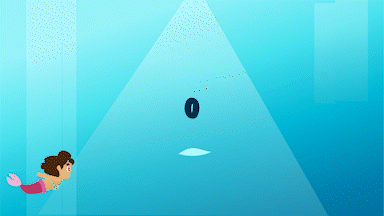

De opdracht
Voor de opdracht van interface en beweging heb ik een karakter ontworpen. Het karakter die ik heb ontworpen is een zeemeermin. De zeemermin heet Coral en zij kan zingen, zwemmen en dansen. Om dit te laten zien heb ik gebruikt gemaakt van after effects en Adobe XD. Het prototype bestaat uit een ladenscherm, een idle state van de karakter en de drie functies. De drie functies worden uitgevoerd als je op de bewegende iconen klikt. uitvoeren door bewegende iconenen. Uiteindelijk heb ik veel met animaties gewerkt en de theorie gekregen hoe je animaties kan toepassen in je eigen werk.

Animaties gemaakt met after effects
- 